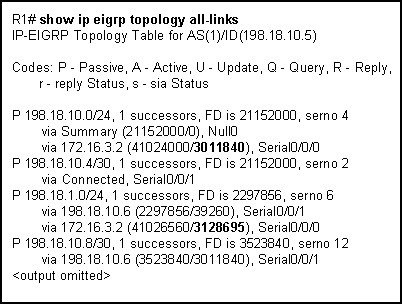
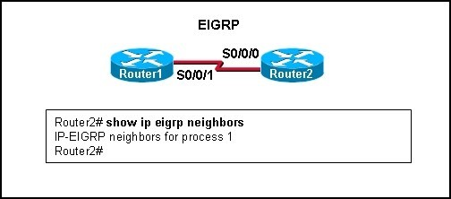
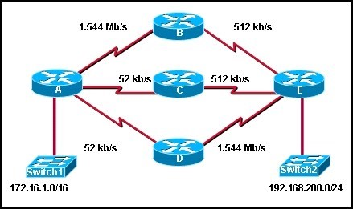
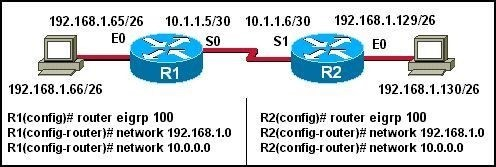
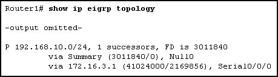
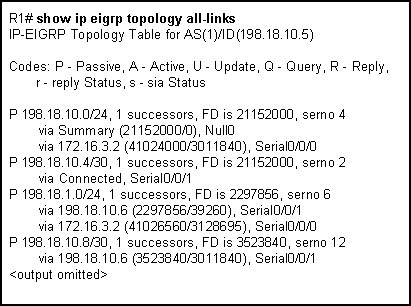
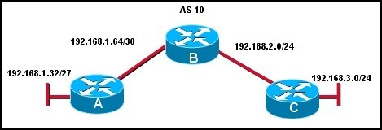
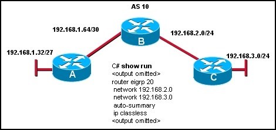
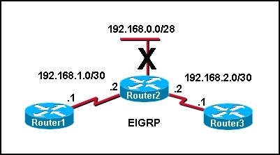
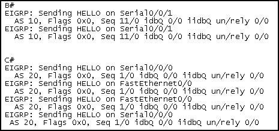

Chapter 9 – CCNA 2
01. Refer to the exhibit.In the topology table, what do the numbers 3011840 and 3128695 represent?
- the route metric that is applied to those EIGRP routes for this router;
- the trustworthiness of the routing information source;
- the composite of the hop count and bandwidth to that destination network;
- the total metric for that network as advertised by the EIGRP neighbor;
02. What two actions will the EIGRP DUAL FSM take if a link to a network goes down? (Choose two.)
- put the route into passive mode;
- query neighbors for a new route;
- search routing table for a feasible successor;
- run the SPF algorithm to find a new successor;
- search topology table for a feasible successor;
03.  Refer to the exhibit. Based on the output of show ip eigrp neighbors, what are two possible problems with adjacencies between Router1 and Router2? (Choose two.)
- The routers are configured with different EIGRP process IDs.
- Automatic summarization was disabled.
- The hello timer for R1 was altered.
- The serial interfaces for both routers are in different networks.
- No feasible successors were found.
04. In which of the following tables does the EIGRP DUAL algorithm store the primary route to a destination? (Choose two.)
- routing;
- topology;
- neighbor;
- path;
- shortest path;
05.  Refer to the exhibit. All interfaces have been configured with the bandwidths that are shown in the exhibit. Assuming that all routers are using a default configuration of EIGRP as their routing protocol, what path will packets take from the 172.16.1.0/16 network to the 192.168.200.0/24 network?
- A,B,E;
- A,C,E;
- A,D,E;
- Packets will load balance across the A,B,E and A,C,E paths.
- Packets will load balance across the A,B,E and A,D,E paths.
- Packets will load balance across the A,C,E and A,D,E paths.
06. On a router running EIGRP, what database would maintain a list of feasible successors?
- routing table;
- neighbor table;
- topology table;
- adjacency table;
07. Which term defines a collection of networks under the administrative control of a single entity that presents a common routing policy to the Internet?
- autonomous system;
- contiguous networks;
- process ID;
- BGP;
08. What information is maintained in the EIGRP topology database for a destination route? (Choose two.)
- the highest cost of the route;
- the SRTT value for the route;
- the feasible distance of the route;
- the physical address of the gateway interface;
- the route cost as advertised by the neighboring router;
09.  Host 192.168.1.66 in the network illustrated is unable to ping host 192.168.1.130. How must EIGRP be configured to enable connectivity between the two hosts? (Choose two.)
- R1(config-router)# network 192.168.1.128
- R1(config-router)# auto-summary
- R1(config-router)# no auto-summary
- R2(config-router)# no auto-summary
- R2(config-router)# auto-summary
- R2(config-router)# network 192.168.1.64
10. Which two statements describe characteristics of EIGRP? (Choose two.)
- EIGRP is a distance vector routing protocol.
- EIGRP supports classless routing and VLSM.
- EIGRP is classified as a link-state routing protocol.
- EIGRP uses TCP for reliable delivery of EIGRP update packets.
- With EIGRP, loop-free paths are achieved through the use of hold-down timers.
- EIGRP sends a periodic update every 30 minutes.
11. Refer to the exhibit. What is indicated by the P at the beginning of the topology entry?
- the route is in a stable state;
- the route is a preferred route;
- DUAL is searching for a better route to this destination;
- the exit interface is in passive mode and EIGRP advertisements are blocked;
12. By default, which two metrics are used by EIGRP to determine the best path between networks?
- MTU;
- load;
- delay;
- bandwidth;
- reliability;
13. In the command router eigrp 20, what is the purpose of the number 20?
- specifies the administrative distance for all EIGRP routes;
- identifies the autonomous system number this EIGRP process will advertise;
- determines what metric is added to all advertised routes;
- indicates the number of addresses in the EIGRP routing domain;
14. Which of the following statements describes the bounded updates used by EIGRP?
- Bounded updates are sent to all routers within an autonomous system.
- Partial updates are sent only to routers that need the information.
- The updates are sent to all routers in the routing table.
- Updates are bounded by the routers in the topology table.
15. Refer to the exhibit. EIGRP is the only routing protocol enabled on this network. No static routes are configured on this router. What can be concluded about network 198.18.1.0/24 from the exhibited output?
- A route to network 198.18.1.0/24 is not listed in the routing table.
- Packets that are destined for 198.18.1.0/24 will be forwarded to 198.18.10.6.
- EIGRP will perform equal cost load balancing across two paths when forwarding packets to 198.18.1.0/24.
- The router with interface 172.16.3.2 is a successor for network 198.18.1.0/24.
16. What administrative distance would a router assign to a default route in EIGRP that is learned from a s ource e xte rnal to the autonomous s ys te m?
- 1
- 5
- 70
- 90
- 170
- 190
17. Refer to the exhibit. Which command will advertise the 192.168.1.64/30 network but not the 192.168.1.32 network on router A?
- network 192.168.1.0
- network 192.168.1.0 255.255.255.0
- network 192.168.1.64 0.0.0.3
- network 192.168.1.64 0.0.0.255
18. The show ip eigrp topology command output on a router displays a successor route and a feasible successor route to network 192.168.1.0/24. In order to reduce processor utilization, what does EIGRP do when the primary route to this network fails?
- The router sends query packets to all EIGRP neighbors for a better route to network 192.168.1.0/24.
- The DUAL FSM immediately recomputes the algorithm to calculate the next backup route.
- Packets that are destined for network 192.168.1.0/24 are sent out the default gateway instead.
- The backup route to network 192.168.1.0/24 is installed in the routing table.
19. Refer to the exhibit.The company is using EIGRP with an autonomous system number of 10. Pings between hosts on networks that are connected to router A and those that are connected to router B are successful. However, users on the 192.168.3.0 network are unable to reach users on the 192.168.1.32 network. What is the most likely cause of this problem?
- IP classless is enabled and is causing the packet to drop.
- The command network 192.168.1.32 was not issued on router C.
- The routers are not configured in the same EIGRP routing domain.
- Automatic summarization of the networks is causing the subnetted routes to be dropped.
20.  Refer to the exhibit.Network 192.168.0.0/28 goes down. What type of packet does Router2 immediately send to Router1 and Router3?
- a query for network 192.168.0.0/28;
- an acknowledgment packet to 224.0.0.9;
- an update packet that is sent to 255.255.255.255;
- a packet that contains the new routing table for R2;
- unicast update packets to 192.168.1.1 and 192.168.2.1;
21. Refer to the exhibit. This is the debug output from 2 directly connected EIGRP routers. They are not forming an adjacency.
What is the cause?

{kind=link}
{kind=link}
{kind=link}
{kind=link}
{kind=link}
{kind=link}
{kind=link}
{kind=link}
{kind=link}
{kind=link}